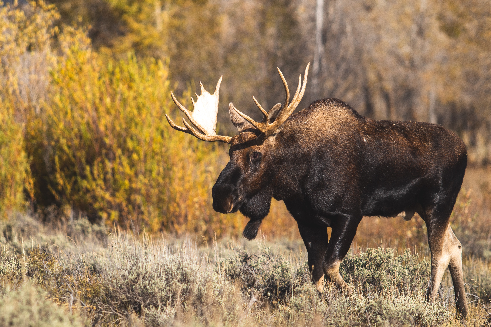

Moose
What are moose?
Moose are the largest of all the deer species. Males are immediately recognizable by their huge antlers, which can spread 6 feet from end to end. Moose have long faces and muzzles that dangle over their chins. A flap of skin known as a bell sways beneath each moose's throat.

COMMON NAME: Moose SIZE: Height at shoulder: 5 to 6.5 feet
SCIENTIFIC NAME: Alces alces SIZE: Height at shoulder:5 to 6.5 feet
TYPE: Mammals WEIGHT: 1,800 pounds
DIET: Herbivore AVERAGE LIFE SPAN IN THE WILD: 15 to 20 years
SCIENTIFIC NAME: Alces alces SIZE: Height at shoulder:5 to 6.5 feet
TYPE: Mammals WEIGHT: 1,800 pounds
DIET: Herbivore AVERAGE LIFE SPAN IN THE WILD: 15 to 20 years